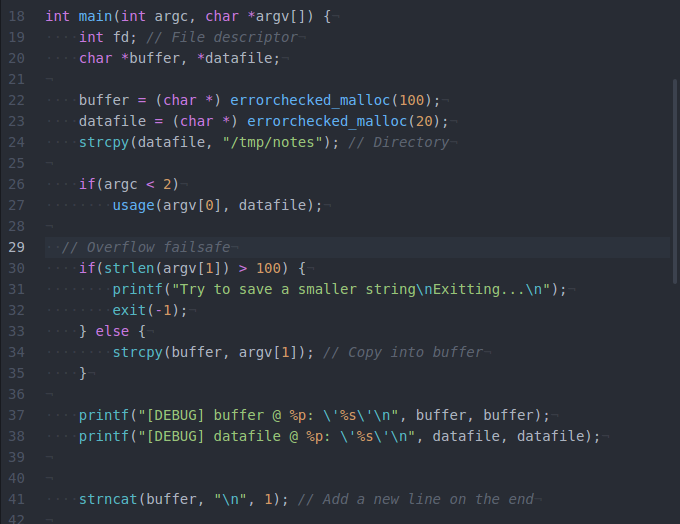
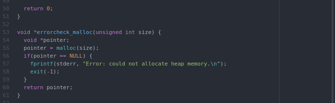
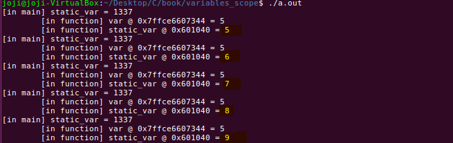

Taking input
8-Dez-2017
Creating a simple menu that filters back input from the user.
Creating a simple menu that filters back input from the user.
A macro is a fragment of code which has been given a name. Whenever the name is used, it is replaced by the contents of the macro.
There are several types of macros:
Unconditional directives:
#define is a Object-like Macro
Conditional directives:

All the libraries, a usage function and the function prototypes.

Reserving heap space for the directory and the input and using strcpy() to insert the user input and the file location into that allocated space. Also, a failsafe in case of user attempts buffer overflow.
The opening the writing and the closing of the file.

fatal() for error messages and errorchecked_malloc() to allocate the memory and to return error in case of failure.


Here we set a default memory size of 50 if no arguments are passed. Then we allocate the memory size with our errorcheck_malloc(). Since malloc() doesn't know what type of memory it's allocating, we must typecast into the appropriate type. Else, it will return a void pointer. We then copy a string using strcpy() into the allocated memory.

free() is used to free the allocated memory.
Here is our errorchecked_malloc(). It accepts the size in bytes to allocate. If that allocation fails, the error checking code will display and error and exit the program. The error display is done with fprintf(), the first argument is stderr with is a standard filestream meant for displaying errors. Otherwise it will return the pointer to the newly allocated heap memory.
Each function has its own set of local variables, which are independent of everything else.
In each function, the variable i is set to a different value and printed. But i doesn't change when other functions are called because they are local to those function, therefore they can not be changed. Each function call has its own version of the variable i.
Let's check out global functions.
In the output, the global variable j is written to in func2() , and the change persists in all functions except func3() , which has its own local variable called j .The global variable j is just stored in memory, and every function is able to access that memory. The local variables for each function are each stored in their own places in memory, regardless of the identical names.
Let's see this code in the debugger
If we disassemble main we can see the adding of 3 to i, the call to printf and the call to function1()
We are going to examine that instruction. That assembly instruction will move the value of 0x3 (3 in decimal) into memory located at the address stored in the RBP register, minus 0x4 (4). This is where the C variable i is stored in memory
Down below we check this process by going to the next instruction. At (..)0652 in main() we examine the memory, which at start is all 0's but and the next instruction (..)0659 in main() will have the value 3 in it
We can check this even closer with print. It stores the result in a temporary variable in the debugger $2
Checking the memory addresses for each variable.
Here, we can see that the variable j used in function3() is different than the j used in other functions. i on the other hand, is on a different memory address for each function.
Like the name says static variables are variables that are local within a particular function context, and that keeps its value between invocations.
Type casting is a way to convert a variable from one data type to another data type.
Let's see this example.
If you look at the output of the division using integers, we see that the result was rounded to the incorrect answer of 2, even if this value is being stored into a floating-point variable. But, if these integer variables are typecast into floats, they will be treated as such, therefore we get the correct calculation of 2.6.
We'll look into typecasting with pointer variables.
Even though a pointer is just a memory address, the C compiler still demands a data type for every pointer. An integer pointer should only point to integer data, and a character pointer to a character data. Because if we look at pointer arithmetic, since an integer is four bytes (8 bytes if you're on a 64 bit system and 2 bytes on a 16 bit machine) and a character only takes up one byte.
The comments explain much of the code. Notice that in the loops, when the integer and character values Programming 53 are actually printed with the %d and %c format parameters, notice that the corresponding printf() arguments must dereference the pointer variables. Notice also that even though the same value of 1 is added to int_pointer and char_pointer in their respective loops, the compiler increments the pointer's addresses by different amounts.
In this next example we make the pointers point to incompatible data types. In an attempt to prevent programming mistakes, the compiler gives warnings about this.
However, in the compiled code, a pointer is nothing more than a memory address, so the compiler will still compile the code if a pointer points to an incompatible data type.
Even though the int_pointer points to character data that only contains 5 bytes of data, it is still typed as an integer. This means that adding 1 to the pointer will increment the address by 4 each time. Similarly, the char_pointer's address is only incremented by 1 each time, stepping through the 20 bytes of integer data (five 4-byte integers), one byte at a time. Once again, the little- endian byte order of the integer data is apparent when the 4-byte integer is examined one byte at a time. The 4-byte value of 0x00000001 is actually stored in memory as 0x01 , 0x00 , 0x00 , 0x00 .
We can fix this by typecasting.
Here, when the pointers are initially set, the data is typecasted into the pointer's data type. This way the C compiler won't complain about the conflicting data types, however the pointer arirthmetic will still be incorrect. To fix that, we need to cast the correct data type when 1 is added to the pointer, that way the address is incremented by the correct amount.
In C, a void pointer is a typeless pointer, defined by the void keyword.
In the next program a single void pointer is used by typecasting it to the proper type of pointer each time it's used. The compiler knows that a void pointer is typeless, so any type of pointer can be stored in a void pointer without typecasting. This also means a void pointer must always be typecast when dereferencing it
The void pointer is really just holding the memory addresses, while the hard-coded typecasting is telling the compiler to use the proper types whenever the pointer is used. Since the type is taken care of by the typecasts, the void pointer is truly nothing more than a memory address.
The EIP register is a pointer that "points" to the current instruction during a program's execution by containing its memory address. Since the physical memory cannot actually be moved, the information in it must be copied. But doing so can be very expensive in terms of computationally, and also from a memory stand point since space for the new destination copy must be saved of allocated before the souce can be copied.
Pointers solve this, instead of copying a large block of memory, we can simply pass around the address of the begining of that block of memory.
Pointers in C can be defined and used like any other variable type.
When you compile you are going to get this warning, so what is it?
This warning is gcc's way of telling you that it cannot verify the format string argument to the printf style function (printf, fprintf... etc). This warning is generated when the compiler can't manually peek into the string and ensure that everything will go as you intend during runtime.
You are taking a string generated at runtime and trying to print it. The warning you are getting is the compiler warning you that there could be a format specifier in the string. Say for eg "bad%sdata". In this case, the runtime will try to access a non-existent argument to match the %s. Even worse, this could be a user trying to exploit your program (causing it to read data that is not safe to read). -Sanjit Saluja
So let's fixed it.
Now let's take a look at this with GDB. We set a breakpoint after the "Hello, world!\n" string has been copied into the str_a buffer and the pointer variable is set to the beginning of it.
When the pointer is examined as a string, it's apparent that the given string is there and is located at memory address 0x6c6c6548 . Remember that the string itself isn't stored in the pointer variable-only the memory address 0x6c6c6548 is stored there. In order to see the actual data stored in the pointer variable, you must use the address-of operator. The address-of operator is a unary operator, which simply means it operates on a single argument. The ampersand (&).
We can see that the pointer variable is shown to be located at the address 0x7fffffffde00 in memory, and contains the address 0xffffde10
The first print command shows the value of int_var , and the second shows its address using the address-of operator. The next two print commands show that int_ptr contains the address of int_var , and they also show the address of the int_ptr
An additional unary operator called the dereference operator exists for use with pointers. This operator will return the data found in the address the pointer is pointing to, instead of the address itself.